Addressing
Scaling Routing
So far, our forwarding table has one entry per destination. This won’t scale to the entire Internet.
If we ran distance-vector on the entire Internet, we’d have to send an announcement for every host on the Internet. If we ran link-state on the entire Internet, every router would have to know the full Internet network graph. In both cases, if any host joins or leaves the Internet, we’d have to re-do computations to converge on a new routing state.
The trick to scale routing is how we address hosts. So far, we’ve called every host and router by some name (e.g. R1, R2, A, B), but in practice, we’ll use a smarter addressing scheme.
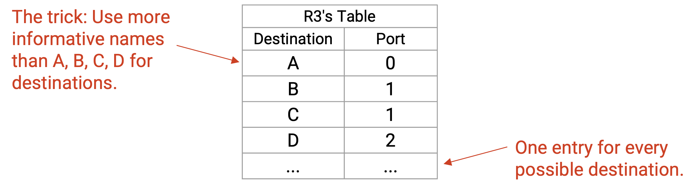
IP Addressing
Recall that in our postal service analogy, we had different addressing schemes for different contexts. The mailman used a street address like 2551 Hearst Ave. The secretary inside the building used a room number like 413 Soda Hall. Addresses are assigned in some structured way. For example, all third-floor room number start with the digit 3, and all fourth-floor rooms number start with the digit 4.
Just like the postal system, the Internet uses different addressing schemes at each layer. In this section, we’ll focus on IP addresses, which can be used for routing at Layer 3.
Every host on the network (e.g. your computer, Google’s server) is assigned an IP address. For this section, you can assume every host has a unique IP address.
An IP address is a number that uniquely identifies a host. Just like the postal system, the number is chosen to contain some context about where the host is located.
Note that IP addresses are not necessarily static. In the analogy, if you move to a different house, your address changes. Similarly, if your computer moves to a different location, it may be assigned a different IP address when it joins the network (and your old IP address will eventually expire).
The length of an IP address depends on the version of IP being used. IPv4 addresses are 32 bits, and IPv6 addresses are 128 bits. The routing concepts are similar for both versions, but we’ll use IPv4 when possible, because smaller addresses are easier to read.
Hierarchical Addressing
Recall that the Internet is a network of networks. There are many local networks, and we add links between local networks to form the wider Internet. This gives us a natural hierarchy that we can use to organize our addressing scheme.
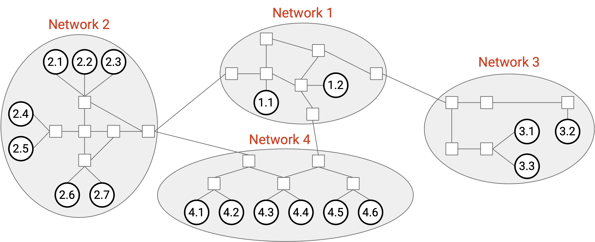
Here’s an intuitive picture of addressing. We could assign a number to every network. Then, within network 3, we could assign host numbers 3.1, 3.2, 3.3, etc., and similar for hosts in the other networks.
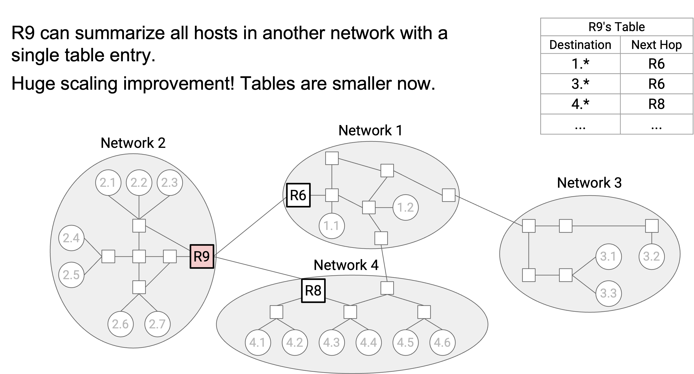
Now, consider the forwarding table in router R9. Before, we would have one entry for every host in network 1, and they would all have the same next hop of R6. With our hierarchical addressing, we could instead have a single entry for the entire local network, saying that all 1.* addresses (where the * represents any number) have a next hop of R6. We could also say that all 2.* addresses have a next hop of R8.
This hierarchical model, where we use wildcard matches to summarize routes, makes our forwarding tables smaller.
In addition, this model also makes our tables more stable.
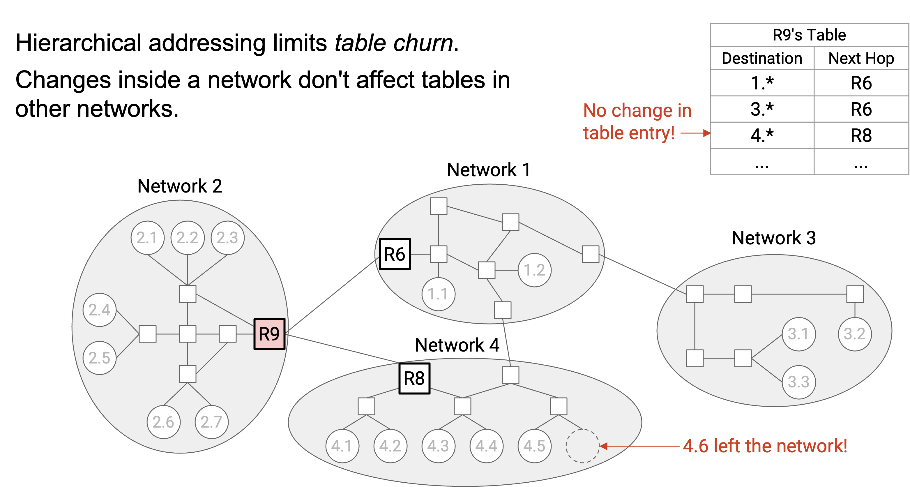
If the topology inside network 1 changes, we don’t need to update R9’s forwarding table (or any other tables in other networks). In practice, changes within a local network (e.g. new host joins the network) happens much more often than changes between networks (e.g. new underground cable installed), so it’s a good thing that local changes only affect local tables.
More generally, our addresses have two parts: a network ID,and a host ID. This allows inter-domain routing protocols to focus on the network ID to find routes between networks, and intra-domain routing protocols to focus on the host ID to find routes inside networks. This also makes our routing protocols more stable as the network changes. Inter-domain protocols don’t care about changes inside networks, and intra-domain protocols don’t care about changes in other networks.
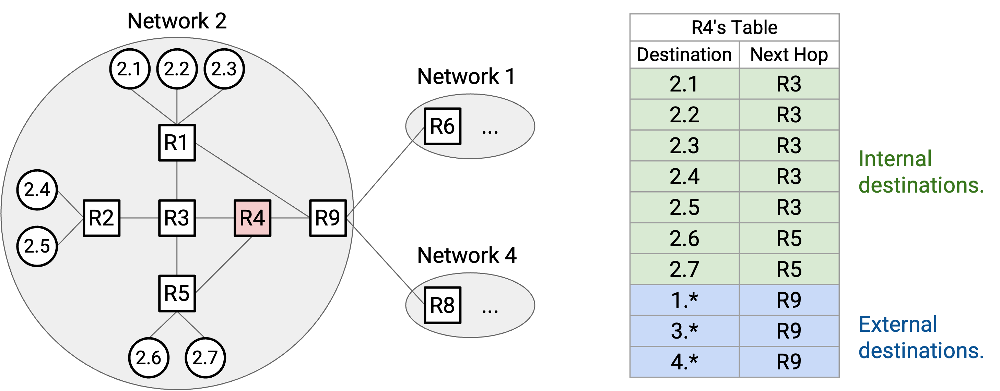
Note that the forwarding table in R9 still needs entries for each individual host inside its own network (i.e. network 2).
Similarly, R4, an internal router with no connections to other networks, needs both entries for individual hosts inside network 3, and aggregated entries for other networks (e.g. 2.* has a next hop of R9). The scale of a forwarding table depends on the number of internal hosts in the same network, plus the number of external networks.
Default Routes
We now know that our entries can represent entire ranges of addresses, instead of always representing a single address. We can extend this idea even further to improve scale.
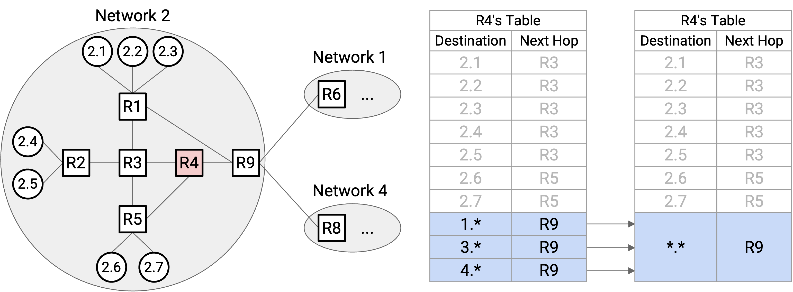
Consider R4. It has an entry for every external network (1.*, 3.*, and 4.*), all with the same next hop of R9. We could aggregate every external network into a single entry. We’ll still have entries for every internal host (2.1, 2.2, etc.), but at the end, we’ll say: For all other hosts not in the forwarding table, the next hop is R9.
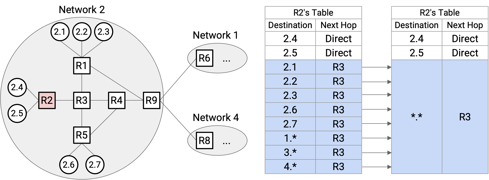
We can use more aggressive aggregation at R2. Again, all external networks have a next hop of R3. But, 2.1, 2.2, 2.3, 2.6, and 2.7 also have a next hop of R3. Therefore, the forwarding table only needs static entries for 2.4 and 2.5. Then, we can say, for all other hosts not in the forwarding table (including some internal and some external hosts), the next hop is R3.
To represent all hosts not in the table, we can use a wildcard . that matches everything. When forwarding toward a given destination, the router first checks specific hosts (e.g. 3.1) or ranges (e.g. 2.) for matches. If the router can’t find any matches, it will eventually match the *. wildcard. This is called the default route.
Most hosts only have a single hard-coded default route. For example, host 2.4’s forwarding table has a single entry, saying to send everything to R2. In practice, your home computer has a single entry, saying to send everything to your home router. This is why hosts don’t need to participate in routing protocols.
Assigning Hierarchical IP Addresses: Early Internet
In order to get more scalable routing, we need to assign addresses in some hierarchical way. The addresses need to contain some information about their location (e.g. nearby hosts need to share some part of their address).
In the early Internet, IPv4 addresses had an 8-bit network ID and a 24-bit host ID, just like in our intuitive version.
For example, AT&T has network ID 12, Apple has network ID 17, and the US Department of Defense has 13 different network IDs.
The 8-bit network ID means we can only assign 256 different network IDs, but in real life, there are way more than 256 organizations that might operate their own local network. Also, our 24-bit host ID means that every network gets 2\^24 = 16,777,216 addresses. A small network (e.g. a company with 10 employees) probably doesn’t need 16 million addresses. As the Internet grew larger, a new approach to addressing was needed.
Assigning Hierarchical IP Addresses: Classful Addressing
The first attempt to fix this was classful addressing, which allocates different network sizes based on need. In this approach, there are 3 classes of addresses, each with a different number of bits allocated to the network ID and host ID. The first 1-3 bits identify which class is being used.
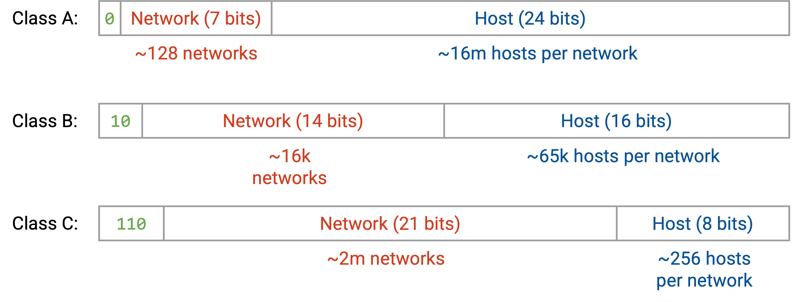
Class A addresses start with leading bit 0. The next 7 bits are the network ID (128 networks), and the next 24 bits are the host ID (16 million hosts).
Class B addresses start with leading bits 10. The next 14 bits are the network ID (16,000 networks), and the next 16 bits are the host ID (65,000 hosts).
Class C addresses start with leading bits 110. The next 21 bits are the network ID (2 million networks), and the next 8 bits are the host ID (256 hosts).
In this approach, we can now have 2 million + 16,000 + 128 different local networks. Larger organizations with more hosts could receive a Class A network, and smaller organizations could receive a Class B or Class C network. As before, within a single network, the leading class bit(s) and network ID bits are the same, and each host gets a different host ID.
One major problem with classful addressing is the size of each class. Class A (16 million hosts) is way too big for most organizations, and Class C (256 hosts) is way too small for most organizations. As a result, most networks need to be in Class B.
Unfortunately, there are only 16,000 Class B network IDs, and by 1994, we were running out of Class B networks. Again, a new approach to addressing was needed.
Note: Classful addressing is now obsolete on the modern Internet.
Note: Technically, the number of hosts per network is off by 2, because the all-zeroes address and all-ones address are reserved for special purposes. For example, in Class C, there are actually 254 hosts per network, not 256.
Assigning Hierarchical IP Addresses: CIDR
Our third approach to hierarchical addressing, and the one still used on the modern Internet, is CIDR (Classless Inter-Domain Routing). In CIDR, we still have variable-length network IDs, but instead of only 3 different network ID lengths (Class A, B, C), we make the number of fixed bits arbitrary.
For example, consider the tiny company with 10 employees from earlier. In classful addressing, they would get a Class C network with 256 host addresses. If they only need 10 host addresses, we could allocate fewer addresses by giving them a longer network ID.
If we allocated a 28-bit network ID, the host ID would be 4 bits long (16 possible addresses). If we allocated a 29-bit network ID, the host ID would be 3 bits long (8 possible addresses). We can’t allocate exactly 10 addresses, but a 28-bit network ID would be sufficient for this company’s purposes. There’s a little bit of waste (6 unused addresses), but this is still way better than allocating 256 addresses.
As another example, consider an organization that needs 450 host addresses. In classful addressing, Class C (256 addresses) isn’t sufficient, so they would receive a Class B network with 65,000 host addresses, and most of the addresses would go unused. With arbitrary-length network IDs, we can assign a 23-bit network ID, which gives 9 bits for host addressing (512 addresses). This meets the organization’s needs and wastes far fewer addresses.
Multi-Layered Hierarchical Assignment
In real life, hierarchies can be multi-layered. For example, inside a network, an organization can choose to assign specific ranges of addresses to specific sub-organizations (e.g. departments in a company or university).
In practice, we exploit real-life multi-layered organizational and geographical hierarchies to assign addresses. ICANN (Internet Corporation for Names and Numbers) is the global organization that owns all the IP addresses.
ICANN gives out blocks of addresses to Regional Internet Registries (RIRs) representing specific countries or continents. For example, RIPE gets all addresses for the European Union, ARIN gets North American addresses, APNIC gets Asia/Pacific addresses, LACNIC gets South American addresses, and AFRINIC gets African addresses. Example: ICANN gives ARIN all addresses starting with 1101.
Each RIR then gives out portions of their ranges to large organizations (e.g. companies, universities) or ISPs. These organizations or ISPs are called Local Internet Registries. Example: ARIN controls all addresses starting with 1101, and gives AT&T all addresses starting with 1101 11001.
Finally, each local Internet registry assigns individual IPs to specific hosts. For additional hierarchy, local registries can also assign IP ranges to small organizations, and the small organizations can in turn assign individual IPs.
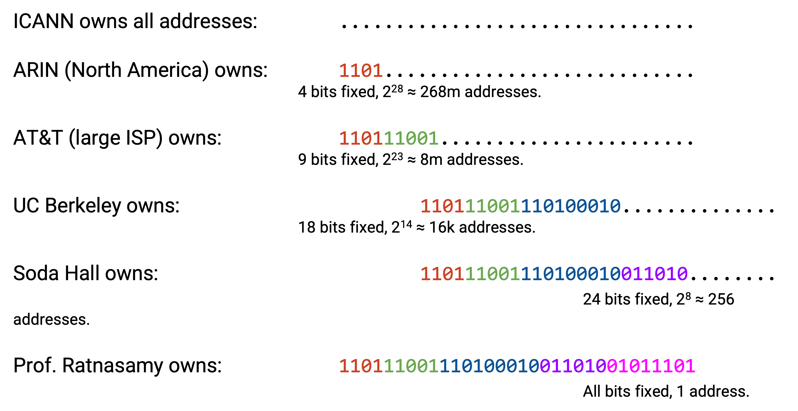
At each level, the number of additional bits fixed is determined by the number of addresses to be allocated. For example, ARIN might want to give AT&T 8 million addresses, and computes that fixing 9 bits results in 8 million host addresses. ARIN had 4 bits fixed already, so it fixes another 5 bits and assigns AT&T all addresses starting with those 9 bits. AT&T might then give the prefix 1101 11001 110100010 to give 16,000 addresses to UC Berkeley. As we allocate addresses to sub-organizations, more bits are fixed, always keeping the fixed bits from parent organizations.
Writing IP Addresses
We could write IP addresses as a 32-bit sequence of 1s and 0s, or as a single big integer. In practice, for readability, we take each sequence of 8 bits and write it as an integer (between 0 and 255). For example, the IP address 00010001 00100010 10011110 00000101 can be written as 17.34.158.5. This is sometimes called a dotted quad representation.
So far, we’ve been writing ranges of addresses as bits (e.g. all IPs starting with 1101). To write a range of addresses, we can use slash notation. We write the fixed prefix, then we write 0s for all remaining unfixed bits, and we convert the resulting 32-bit value into an dotted quad IP address. Then, after the slash, we write the number of fixed bits.
For example, if the prefix is 11000000, we add zeros for all the unfixed bits to get 11000000 00000000 00000000 00000000. As a 32-bit address, this is 192.0.0.0. Then, because 8 bits were fixed, we write the range as 192.0.0.0/8.
To write an individual address as a range, we could write something like 192.168.1.1/32, which indicates that all 32 bits are fixed. Also, the default route . can be written as 0.0.0.0/0.
Slash notation can sometimes look a little confusing because we’re using arbitrary 8-bit divisions and writing numbers in decimal. For example, the 8-bit prefix 11000000 and the 12-bit prefix 11000000 0000 would be written as 192.0.0.0/8 and 192.0.0.0/12 (same IP address representing different ranges). As another example, if I owned the 4-bit prefix 1100, I could assign the 5-bit prefix 11001. As ranges, these are written as 192.0.0.0/4 and 200.0.0.0/5. At first glance, it’s not clear that the second range is actually a subset of the first one, and we’d have to write out the bits to confirm.
An alternative to the slash (e.g. /16) in the slash notation is a netmask. Just like the number after the slash, the netmask tells us how which bits are fixed. To write a netmask, we write 1s for all fixed bits and 0 for all unfixed bits, and convert the result into a dotted quad. For example, if we had the range 192.168.1.0/29, we could write 29 ones (fixed bits) and 3 zeros (unfixed bits). 11111111 11111111 11111111 11111000 as a dotted quad is 255.255.255.248. The range in netmask notation is 192.168.1.0, with netmask 255.255.255.248 (replaced the slash with a netmask).
In these notes, we’ll usually use slash notations because they’re more convenient to read. In practice, netmasks can be useful because given a specific IP address, if you perform a bitwise AND between the IP address and the netmask, all the host bits will get zeroed out, and only the network bits will remain.
Aggregating Routes with CIDR
In our original model with a network ID and host ID, we could aggregate all hosts inside the same network into a single route in the forwarding table (e.g. 2.* for everything in network 2).
Multi-layered hierarchical addressing means that we can also aggregate multiple networks into a single route.
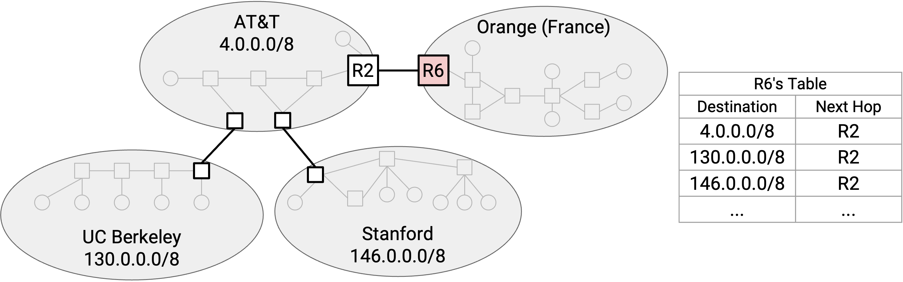
Consider this diagram of networks. In our original model, R6 needs a separate forwarding entry for AT&T, UCB, and Stanford.
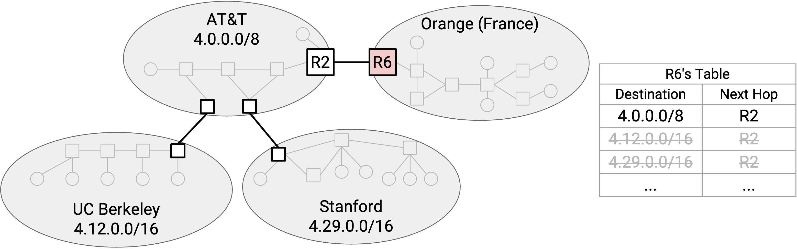
However, if we used hierarchical addressing, then UCB’s range (4.12.0.0/16) and Stanford’s range (4.29.0.0/16) are both subsets of AT&T’s range (4.0.0.0/8). This could happen if AT&T allocated those ranges to its subordinate customers UCB and Stanford.
Now, R6 only needs a single entry for AT&T, UCB, and Stanford. We’ve aggregated the two smaller ranges into the wider range that they both belong to.
Multi-Homing
Aggregating ranges doesn’t always work. Suppose we added a link from R6 directly to Stanford.
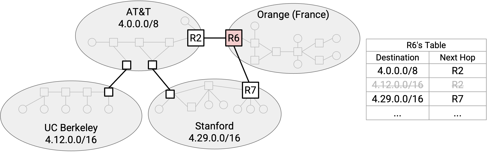
Our aggregated route says that all packets to AT&T (and its subordinates) have a next hop of R2. We need to add an additional entry saying that Stanford has a next hop of R7.
Notice that our forwarding table now has ranges that overlap. A destination could match multiple ranges. To pick a route, we’ll run longest prefix matching, which means we’ll use the most specific range that matches our destination IP address. For example, if we had a packet destined for a UCM host, we would use the UCM-specific entry because it has the longer 19-bit prefix. Even though the 9-bit AT&T entry also matches the destination, its prefix is shorter, so we don’t use this route.
If instead we had a packet destined for a UCB host, we can’t use the Stanford-specific entry, because the 16-bit prefix won’t match the UCB host. But we can still use the 8-bit AT&T entry, which will match the destination.
Brief History of IPv6
IPv4 addresses are 32 bits, which means we have roughly 4 billion addresses available. Is this enough?
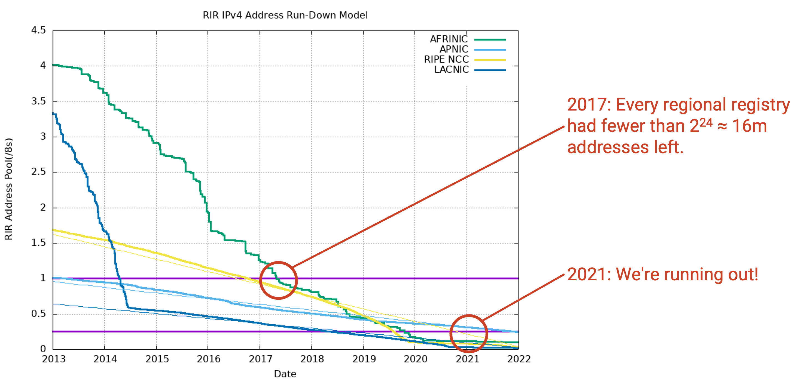
This graph plots the number of remaining unallocated IP addresses (y-axis) for each regional registry over time.
By 2017, everybody had less than one /8 block (i.e. less than 2\^24 = 16 million addresses) available. Each regional registry held a spare /8 block of addresses just in case, but by 2017, everybody had to start using their spare supply of addresses. By 2021, even the spare supply of addresses was running out.
Fun fact: In February 2011, there was an in-person ceremony when the final /8 block was allocated. There was even a special paper certificate issued.
As the Internet grew, we started to realize that we would eventually run out of addresses. Luckily, this was realized early on, and IPv6 was developed in 1998 as a response to IP address exhaustion.
Fundamentally, IPv6 addressing structure is the same as IPv4. There are some minor implementation changes needed for IPv6, though they aren’t relevant here.
The main new feature in IPv6 is longer addresses. IPv6 addresses are 128 bits long, which means there are roughly \(3.4 \times 10^{38}\) possible addresses. This is an astronomically big number, so we’ll never run out. The universe is \(10^{21}\) seconds old, so we could assign an address to every second and still have only used 0.000000000000001% of all available addresses.
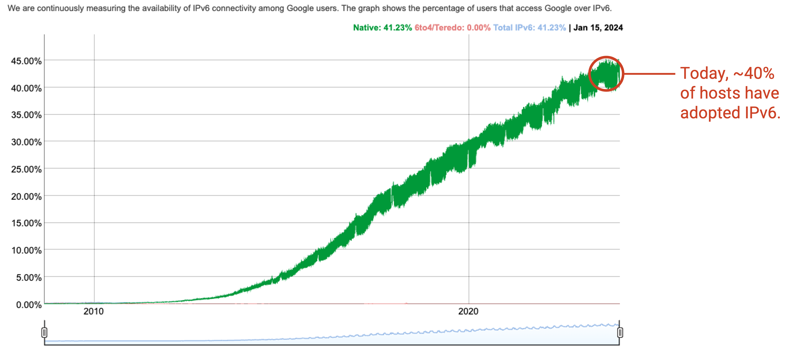
IPv6 was developed in the 1990s, but was not immediately adopted by all computers. Even in 2010, basically nobody used IPv6. As of 2024, IPv6 is used by around 45% of end users, and most of these users are located in developed countries with wider Internet adoption. The main reason why IPv6 is becoming more widely-adopted is because we’re running out of IPv4 addresses.
Why is IPv6 adoption so slow? Users, servers, and Internet operators have to upgrade their software and hardware (e.g. routers, links, device drivers on computers) to support IPv6. Routers now need two forwarding tables, one with IPv4 addresses and one with IPv6 addresses.
IPv6 upgrades have to be backwards-compatible. If a server only had an IPv6 address, users on older computers that only support IPv4 can’t use this server. IPv4 and IPv6 are essentially separate addressing systems, and there’s no way to convert between IPv4 and IPv6 addresses. As of 2024, many computers still don’t support IPv6, so many services need to support both IPv4 and IPv6.
Computers that do support both IPv4 and IPv6 also have to think about which one to use. Is one better than the other? In practice, IPv6 is faster, but many other implementation details could affect your choice.
IPv6 Address Notation
IPv6 addresses are usually written in hexadecimal instead of decimal. For example:
2001:0D08:CAFE:BEEF:DEAD:1234:5678:9012
is an IPv6 address (32 hex digits = 128 bits). We add colons in between every 4 hex digits (16 bits) for readability.
For readability, we can omit leading zeros within a 4-digit block. For example:
2001:0DB8:0000:0000:0000:0000:0000:0001
can be shortened to 2001:DB8:0:0:0:0:0:1.
For readability, we can also omit a long string of zeroes, e.g. 2001:DB8::1. The double colon says to fill in all missing 4-digit blocks with 0000. This can only be done once per address. (Omitting two ranges creates ambiguity, because we don’t know how many zeroes go in each range.)
Slash notation can still be used in IPv6. An individual address has /128 (all bits fixed). A 32-bit prefix might look like 2001:0DB8::/32.
Because the address space is so large, in IPv6, you could fix the network ID to be 64 bits and the host ID to be 64 bits, and still never run out of network IDs or host IDs. In fact, special protocols exist where networks and hosts can pick their own 64-bit network ID and host ID (and check that no one else is using it), without an organization needing to allocate specific IDs.
In practice, regional registries typically allocate 32-bit prefixes to ISPs, and ISPs typically allocate 48-bit prefixes to organizations. The organization can then allocate 64-bit prefixes to smaller sub-networks. In IPv6, we usually don’t see prefixes longer than /64. Even the smallest sub-networks inside an organization have a 64-bit prefix, and 64 bits for addressing specific hosts. Using these standardized prefix sizes allows prefixes to be more informative. For example, in IPv6, it’s not clear what a /19 prefix represents, but in IPv6, we know a /32 prefix typically represents an ISP. TODO double check this